duohertz / visual study / 2026-09-24
Unreviewed concepts
Original concepts and editorial screen-print studies are shown at the development hub's 270px desktop and 170px phone card-art heights. New art is a visual direction test, not audience validation, originality clearance, production art approval, or a live-site change.
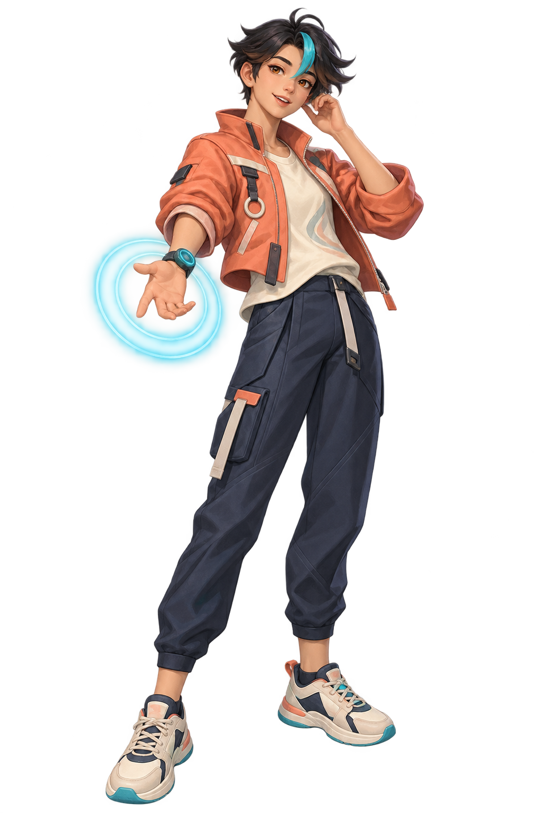
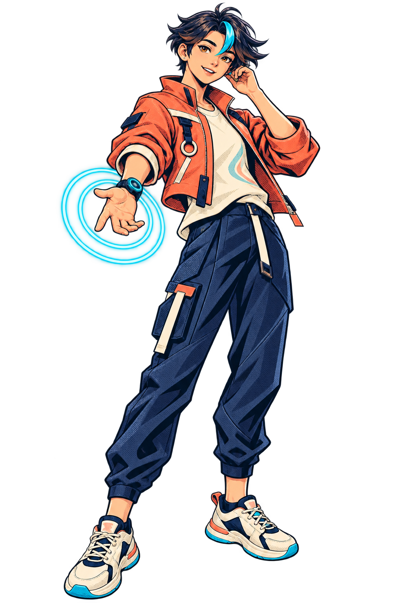
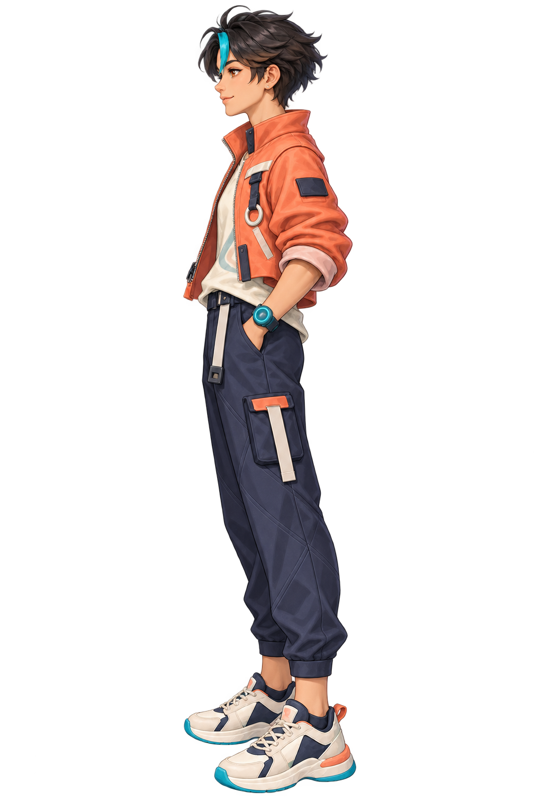
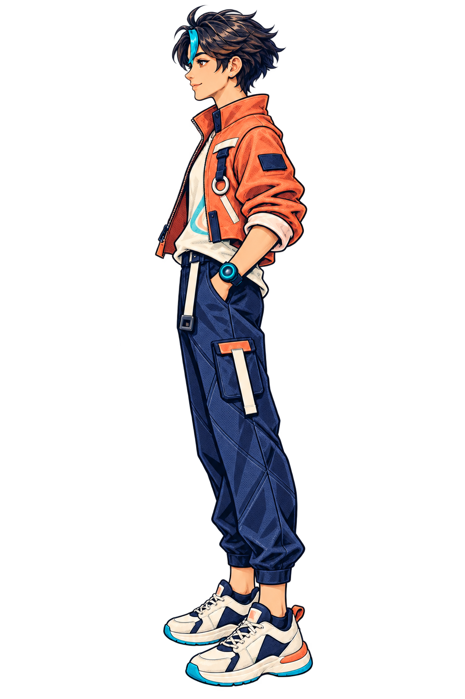
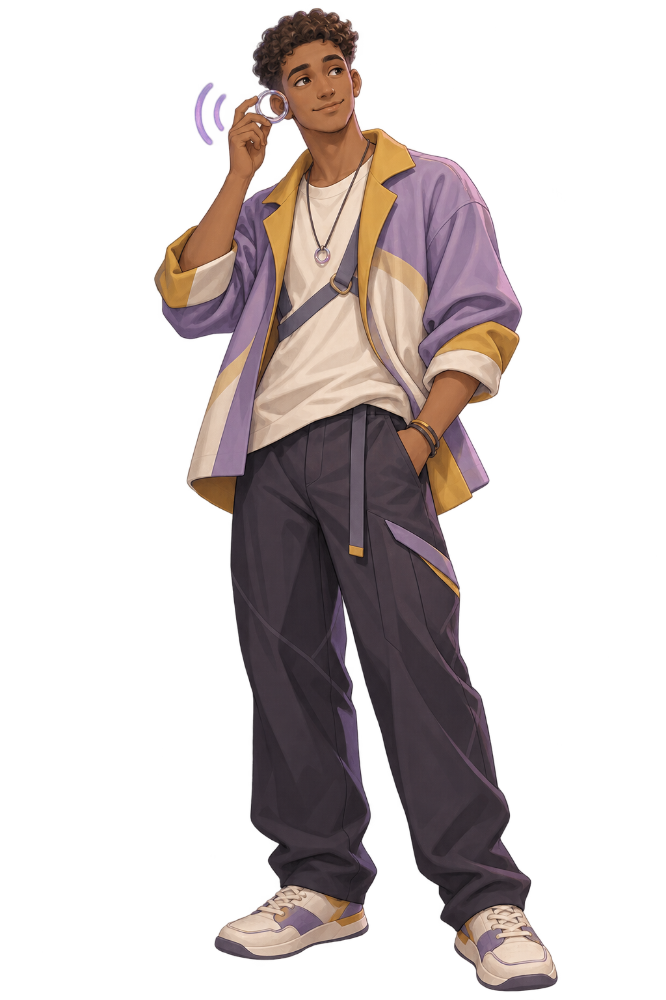
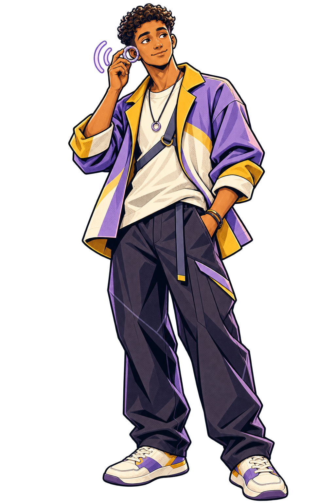
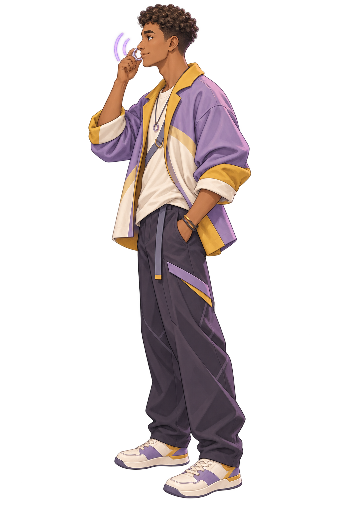
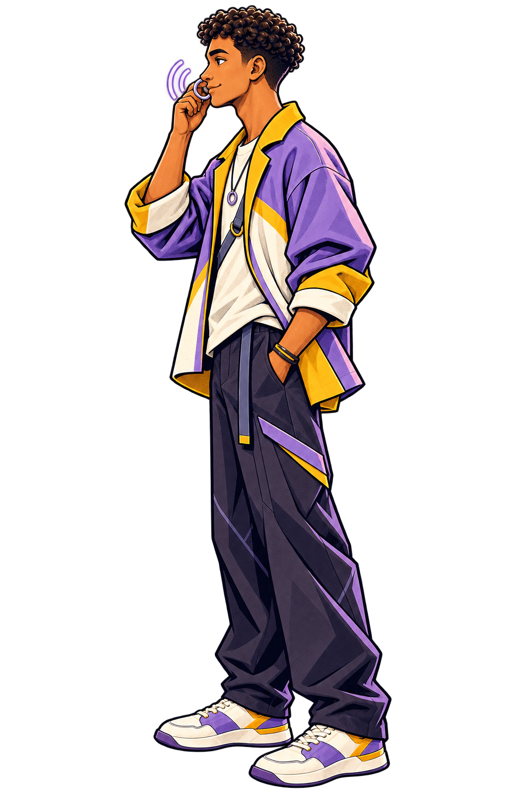
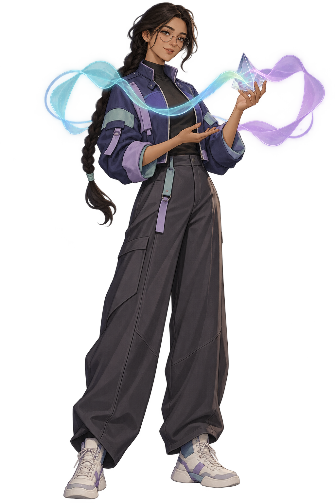
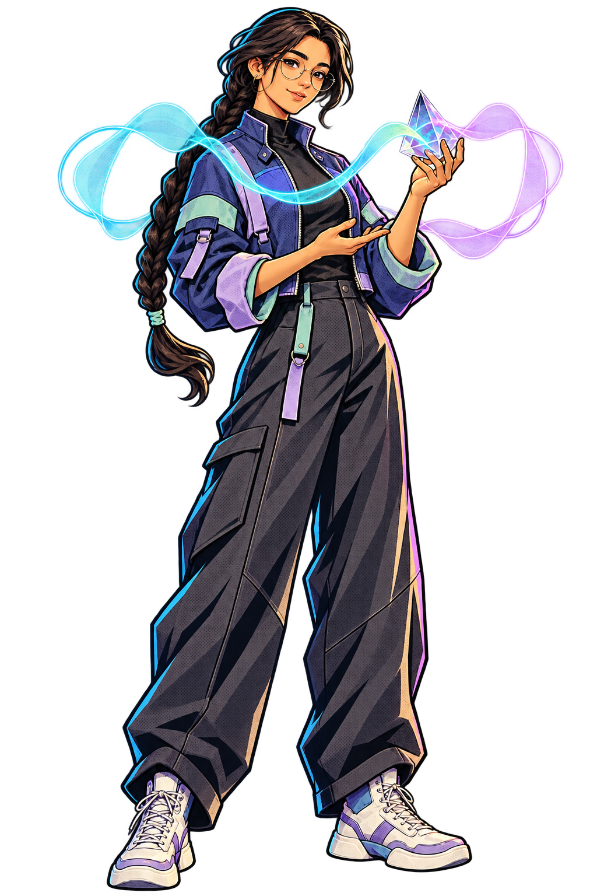
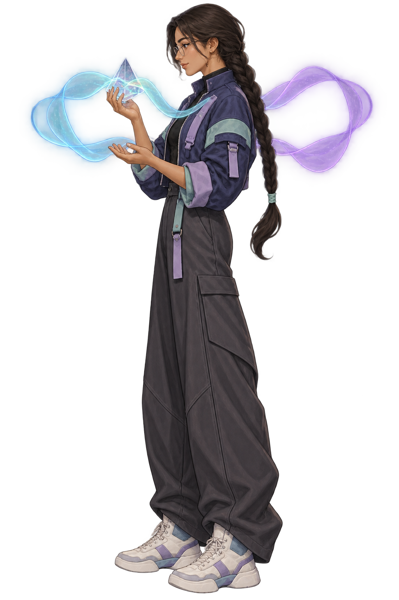
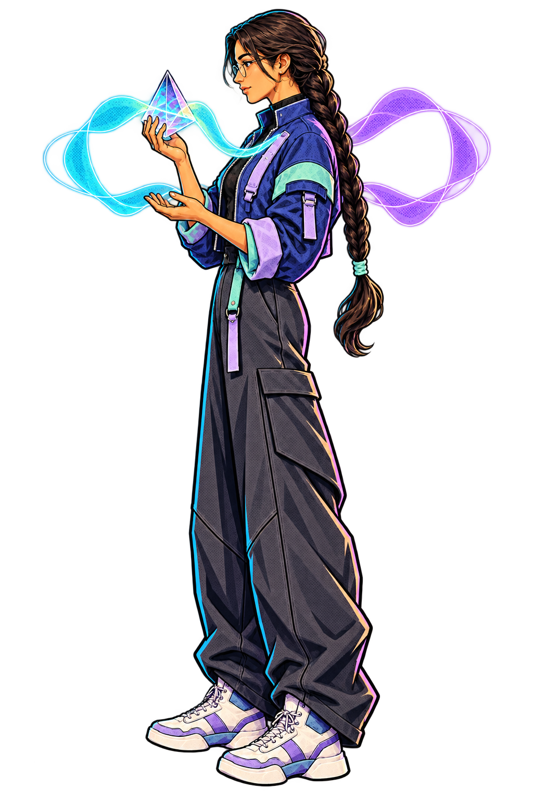
Review focus: check whether the wide cyan/lavender wave ribbons leave enough room for the character silhouette at card size.